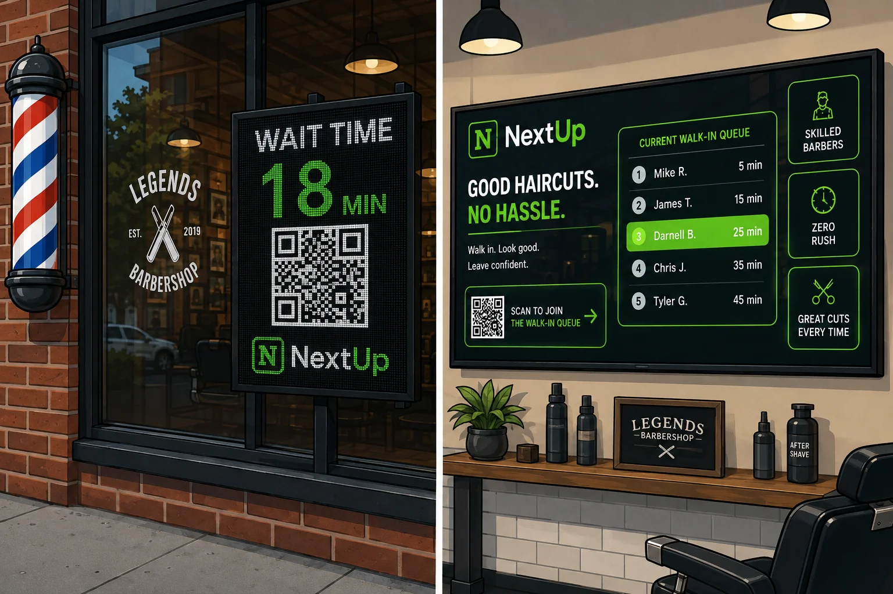
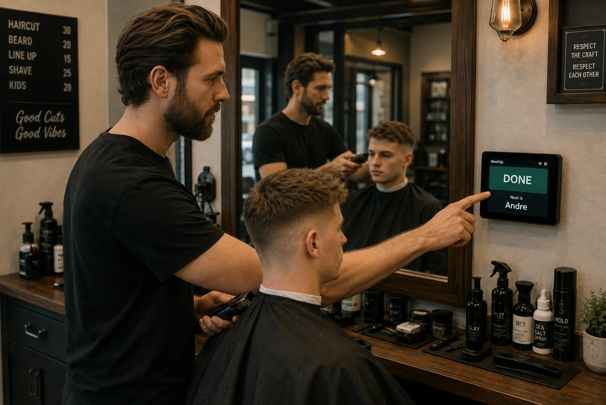
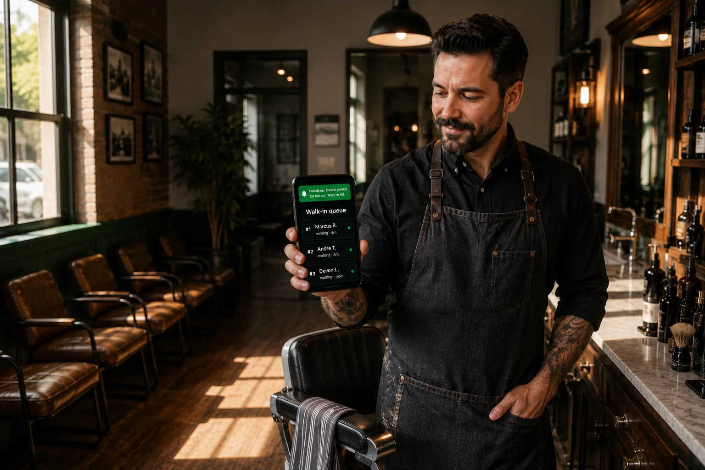
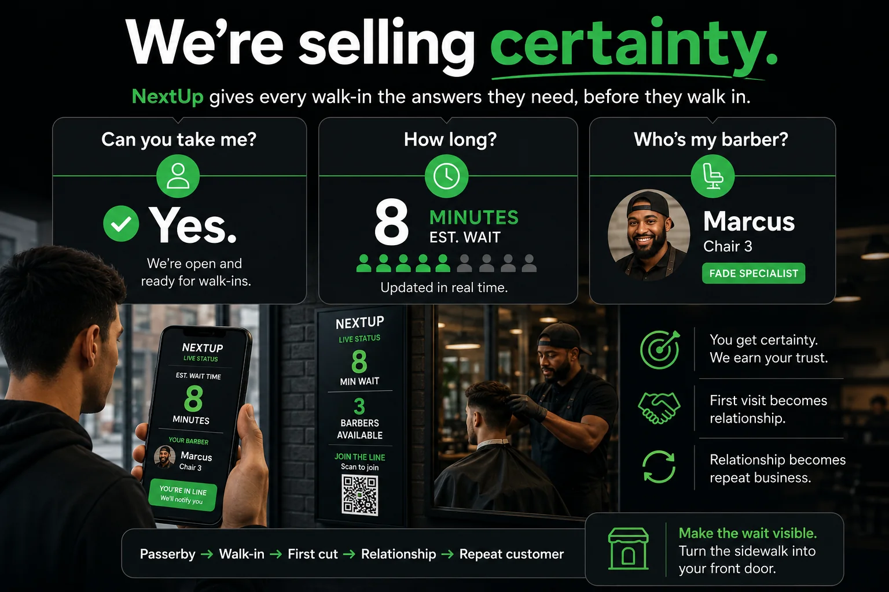

The live wait time on your window gives passersby a reason to stop — they scan, hold their spot, and get notified when they're up.
Make the wait visible, and the sidewalk becomes your front door.
Keep the customer in your line — even when they're not in your shop.
See the wait. Hold your spot. Get notified when you're up.
No app. No phone call. · Live wait on the window, the wall, and the mirror.
The problem
Every other part of life got faster and more digital. The barbershop walk-in didn't — it's still a clipboard, a crowded lobby, and a guess at how long you'll wait.
Appointments went digital. For the independent shop, the walk-in didn't.
But the wait isn't just an annoyance to smooth over — it's the exact moment a new customer decides whether to try you at all.
Why the walk-in matters
They don't know your barbers. They don't know your wait. They don't know whether walking in will cost them 20 minutes or an hour.
So show them.

The live wait time is on the window before they even walk in — no guessing, no walking away.
Check in from anywhere — scan the window code, tap a link, or text the shop. No app to download, no phone call to make.
No crowded lobby. Grab a coffee, run an errand — your spot is held while you wait wherever you want.
The barber calls them when the chair is actually freeing up — not on a guess. Join The Line texts them to head back.
Their name comes up on the Lobby screen and at the barber's Station. The barber calls them; the chair keeps moving.
Customers already know how to do this — Supercuts logged 2.3 million remote check-ins in a single year, and Great Clips has offered it since 2013. Nobody built it for the neighborhood shop.
Five steps, no customer app — and one button for your barbers.
Join The Line runs the live walk-in line alongside the schedule you already keep — so an open chair can still catch someone off the sidewalk, and a booked chair stays booked. You don't have to choose.
At the chair
Your barbers don't manage software. Join The Line shows one clear action at a time, and it names the customer — “Start with Marcus,” then “Done — next is Andre.” The button changes with the chair, so there's nothing to learn. Skips and corrections stay in the app, out of the way.

Everywhere they look
The wait on your window, the board in your lobby, every waiting customer's phone — and your barber's station. One press updates all of it at once. The same live queue reaches every surface, and there's no proprietary system to buy and maintain.
The merchant upside
A physical line loses people twice: some won't join when it looks long, and some give up after waiting too long. A digital queue lets a customer hold their spot and step out — walk the block, wait in the car, handle an errand — then come back when they're up. So you can hold demand that would otherwise walk out the door, without needing everyone crammed into the waiting area.
A long-looking line turns people away before they ever join.
A crowded lobby wears people down until they leave.
A queue they can leave without losing their place addresses both.
Before they get here
Everyone who joins from their phone shows up in your queue — and every barber on shift gets a text the moment they do. So a quiet room isn't the whole story anymore — the line can be building before anyone's walked through the door.

Every barber on shift gets it the second someone joins. Nobody has to be watching the door.
The room looks quiet. The line tells you whether it actually is.
The national chains have run it this way for over a decade — salons watch online check-ins to plan breaks and call stylists in early. Nobody built it for the shop on the corner.
An easier yes
Most people looking at your shop on Google or Instagram aren't ready to commit to an appointment — so they call, or they keep scrolling. The line is a smaller ask. Paste your queue link into the profiles you already have, and every one of them gets a second way in: not “pick a time,” just “want in?”
Pick a time, commit to it, cancel if life happens. Plenty of customers want exactly that — the ones who plan ahead.
Nothing to schedule, nothing to cancel. They see the wait, hold a spot, and show up when they're up. That's the yes everyone else can give.
Google, Yelp, Instagram, your website, your window — the same link works on all of them. And if you're already paying Google or Yelp for the click, this is what the click should land on.
The engine

Appointments solved certainty for scheduled customers. Join The Line brings certainty to the walk-in.
Also included
The everyday jobs out front keep happening while you're mid-cut — nothing extra to set up.
Even when you're mid-cut, every call still gets picked up.
Same number, nothing to change.
The live wait stays visible to everyone walking past, even while you're busy cutting.
Who they are, what they get — kept on file.
Join The Line (formerly NextUp) is made by Vozlia.
Bring Join The Line to your shop
We're rolling out by area. Drop your info and we'll reach out the moment we open access near you.
Ready to start now? Set up your shop yourself